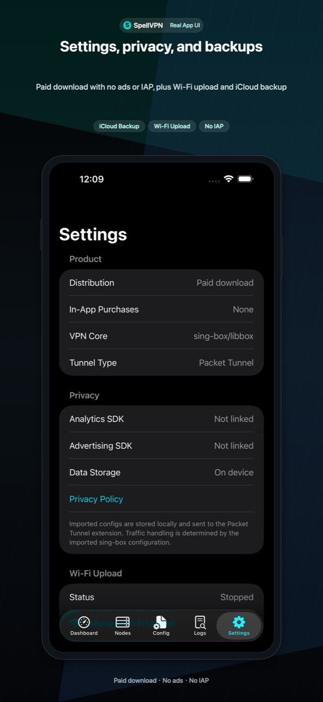
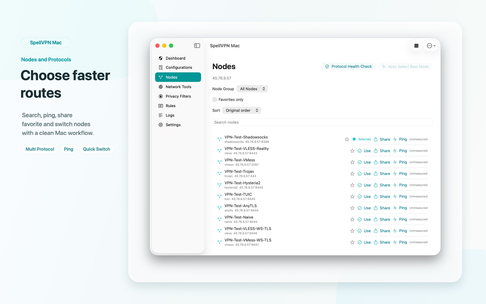

SpellVPN
iOS Pro / Ultra · Native macOS Packet Tunnel
Импортируйте свои sing-box JSON, Clash/Mihomo YAML, WireGuard text, subscription URLs, proxy links, QR codes, clipboard text, local files, Wi-Fi uploads или remote configuration URLs, затем подключайтесь на iOS или через native macOS Packet Tunnel.


Способы импорта
QR-сканирование, QR из Фото, буфер обмена, Файлы, Wi-Fi Upload, URL подписки, proxy-ссылки и URL-схемы. Поддерживаются sing-box JSON, Clash/Mihomo YAML, списки Base64 URI, SIP008, Surge, Quantumult, текст Shadowrocket и распространенные proxy-ссылки.
Узлы и подписки
Управляйте сохраненными URL подписок, обновляйте или копируйте их, выбирайте узлы, редактируйте реальные proxy outbounds, экспортируйте один узел в JSON и показывайте QR-коды узлов.
Профили, инструменты и виджеты
Используйте профили подключения, паузу VPN, privacy filters, DNS management, Network Tools для TCP Ping, DNS, IP, Whois, GeoIP, TLS, HTTP, TCP/UDP, IPv6 и speed test, виджеты Home/Lock Screen, базовые App Shortcuts, локальные логи, диагностику, JSON импорт/экспорт и резервные копии iCloud Drive.
Pro и Ultra
Pro является платной загрузкой без рекламы и встроенных покупок. Ultra бесплатна, использует рекламу Yandex/AdMob; автопродлеваемая подписка убирает рекламу и открывает Ultra-функции.
macOS App Store build
Версия для Mac является native macOS client с отдельным Packet Tunnel Provider. Она импортирует sing-box JSON, Clash/Mihomo YAML, common proxy links, SIP008 Shadowsocks JSON, WireGuard text, QR codes, clipboard text, files и remote configuration URLs. Она управляет profiles, node groups, favorites, source updates, rules, local privacy filters, Relay / MultiHop, diagnostics, encrypted backups и menu bar connect/disconnect. macOS target не содержит ad SDKs, analytics SDKs, StoreKit products, subscriptions, provider-lines service или встроенный VPN account.
Скриншоты
Скриншоты Mac App Store теперь показывают desktop dashboard, node management, routing, configuration и security/privacy tools из macOS submission package.







Важные ограничения
SpellVPN не продает proxy-узлы и не размещает пользовательский трафик. Качество соединения зависит от выбранной пользователем конфигурации, сервера и сети. Текущая сборка включает status widgets и базовые App Shortcuts, но не рекламирует фоновое подключение/отключение VPN через Shortcuts, MITM, rewrite-скрипты, Apple TV/tvOS, Live Activities, Apple Watch, raw ICMP ping, traceroute, WebRTC leak testing, native OpenVPN или native WireGuardKit.